L'Homme-Sable (William Baker) (Terre-616)
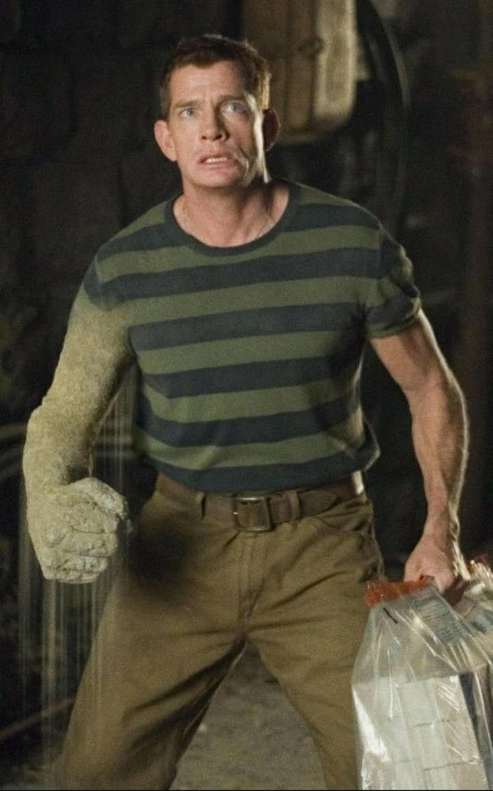
Origines :
William Baker est né et a grandi dans un quartier pauvre de New-York
Son père quitta le foyer familial alors qu'il n'était âgé que de trois ans, le laissant seul avec sa mère, qui vivent dans la misère.
Il apprend à voler très tôt et réussit à l'école en trichant.
Au lycée, il est un très bon joueur de football, mais gâche ses chances de devenir professionnel le jour où il accepte de l'argent pour perdre un match important.
Baker fait ensuite partie d'une bande de racketteurs, et se fait désormais appeler Flint Marko.
Il évolue dans le milieu New-yorkais mais secrètement, il souhaite se racheter et épousera Marcy Conroy, avant d'être arrêté et incarcéré pendant plusieurs années.
A sa libération, Marko commet plusieurs crimes et est de nouveau arrêté.
Il réussit à s'évader et décide de gagner le Sud et d'y commencer une nouvelle vie.
Il se réfugie sur un site d'essais nucléaire et se trouve sur une plage lorsqu'un des réacteurs explose, l'irradiant par la même occasion.
Après une courte période d'inconscience, il se réveille et constate qu'il peut transformer son corps en sable.
Il prend alors le surnom d' « Homme-sable » et poursuit ses activités criminelles.
Durant sa carrière, il s'oppose à de nombreuses reprises aux Quatre Fantastiques, à Spider-Man et d'autres héros luttant contre le crime.
Alors qu'il décide de mettre fin à sa carrière de criminel, le Docteur Octopus le contraint à reprendre du service au sein des Sinister Six.
Néanmoins, sa volonté de mener une vie honnête est la plus forte, et il aidera Spider-Man à combattre ses anciens alliés.
Silver Sable l'engage ensuite dans son Wild Pack dont il devient le chef.
Il sera même promu Avenger de réserve, et sera gracié par le président des États-Unis.
Alors qu'il protège le sénateur Ward, Marko s'alliera au Piégeur contre Spider-Man et les Quatre Fantastiques, repassant alors du mauvais côté de la barrière, avant d'être mortellement blessé par Venom et de se réconcilier avec Spider-Man, avant de mourir.

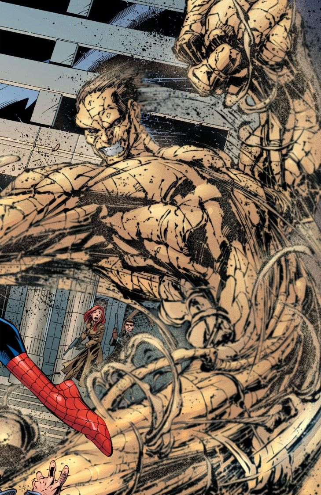
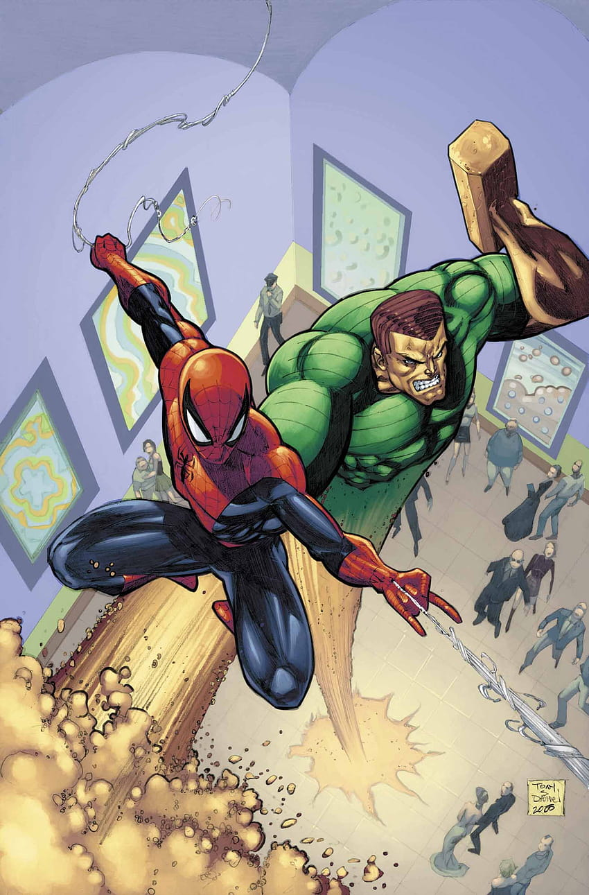
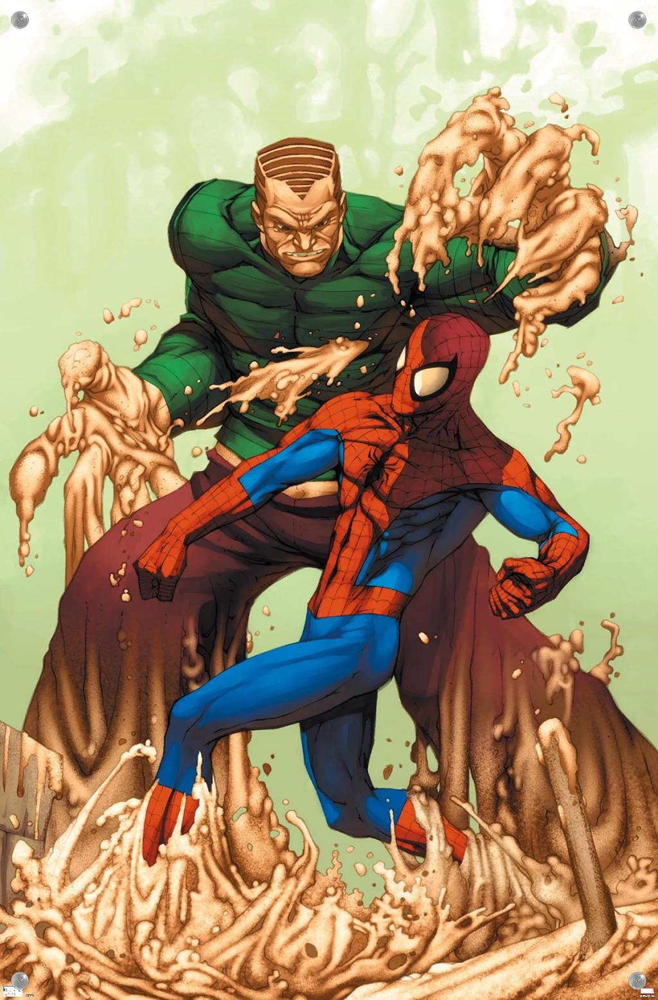
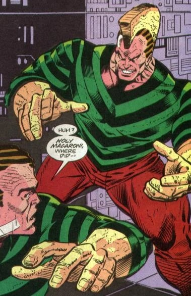
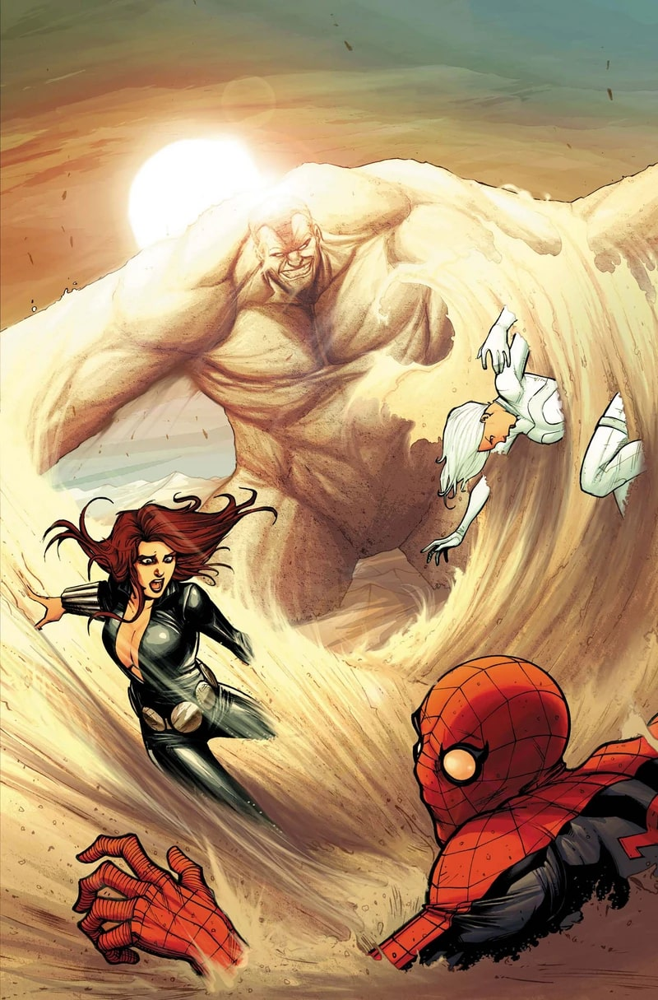
Capacités :
L'Homme-sable peut convertir l'intégralité de son corps en une substance similaire à du sable, et lui donner la forme qu'il désire.
Il possède un contrôle total sur sa densité : il peut rendre les particules de sable constituant son corps compact, ou au contraire les espacer, devenant aussi solide que du ciment ou au contraire se rendre insensible aux attaques physiques.
Il peut donc transformer ses bras en véritables armes contondantes, comme un fléau, une masse etc.
Il est également capable de reformer son corps à partir de grains éparpillés, tant que la majorité de son corps reste à proximité.
Il peut convertir des grains de sable autour de lui, les transformants en de véritables parties de son corps, pour accroître sa taille et sa masse, la portée de ses membres ou encore récupérer des portions qu'il aurait perdu en combat.


Apparence :
Sous son apparence humaine, l'Homme-sable porte la plupart du temps un pull rayé vert et noir, avec un pantalon brun ou violet.
Lorsqu'il utilise ses pouvoirs, sa peau devient beige, granuleuse comme du sable.
Équipes affiliées


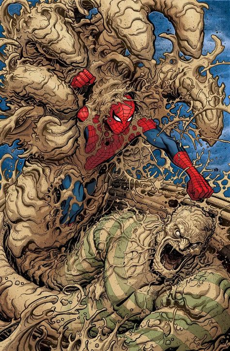
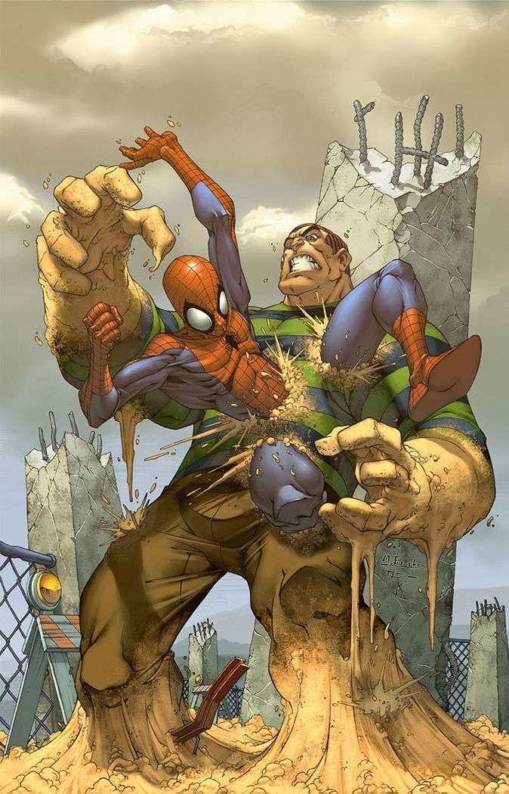
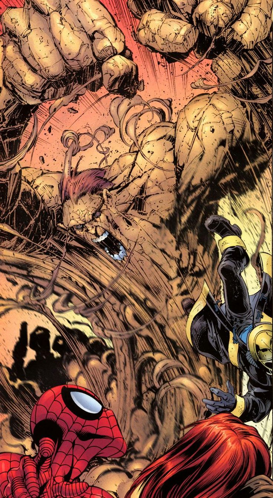
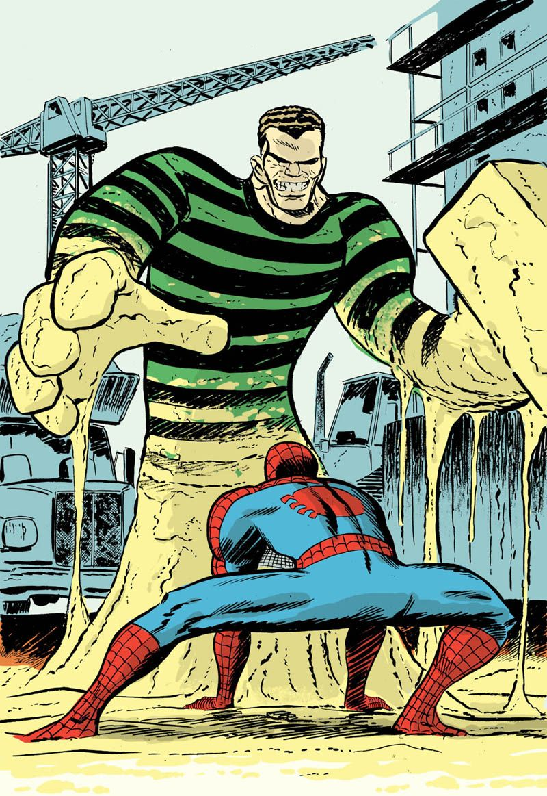
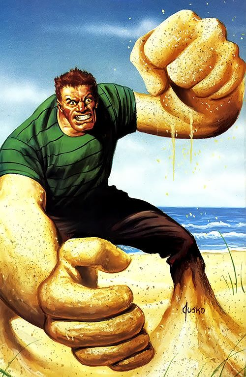
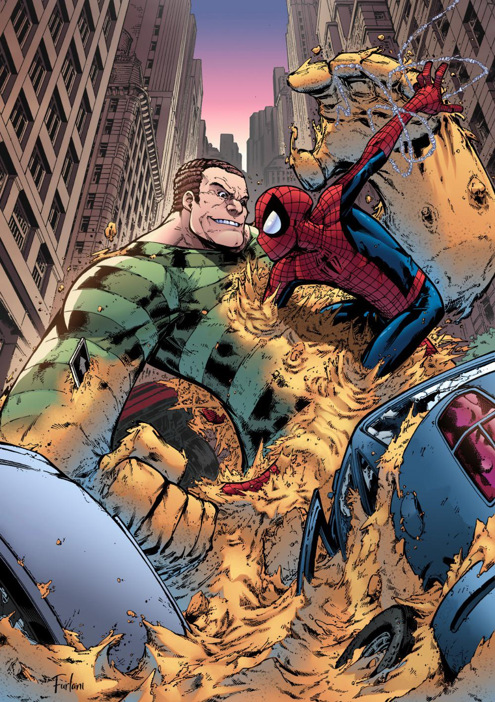
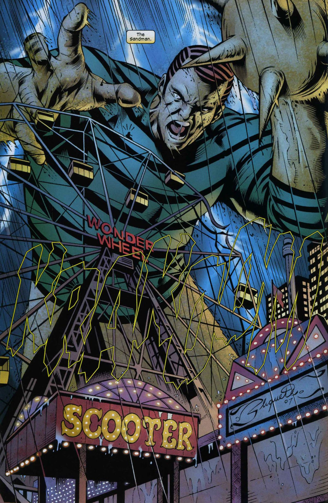
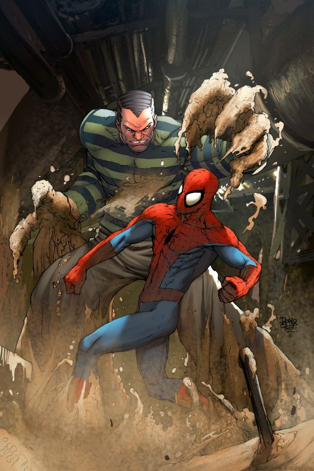
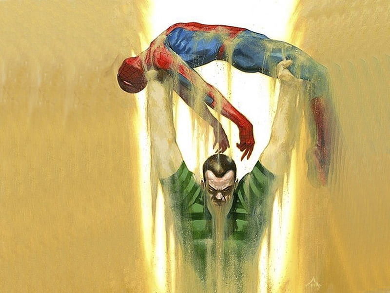
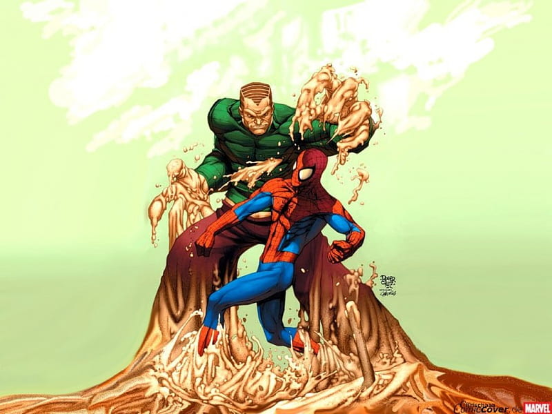
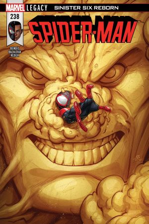
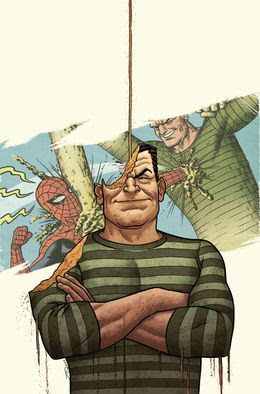